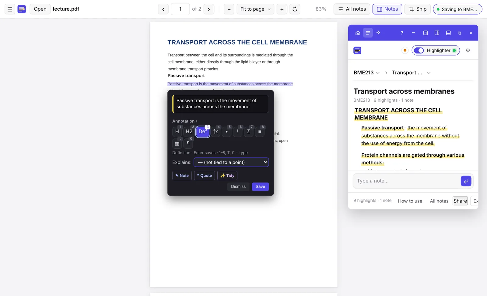
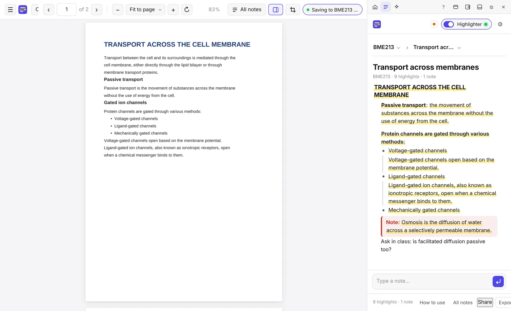
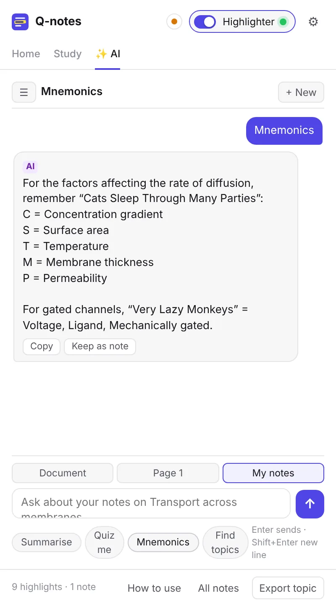
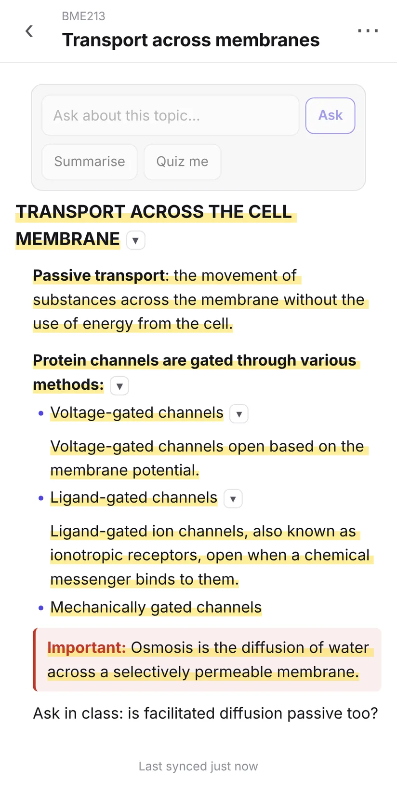

Lecture notes that build themselves as you read
Highlight your lecture PDFs, slides and web pages. Q-notes files every line under the right course and topic, as a heading, definition or list point, so revising is reading, not rewriting.
Free · Chrome on a computer · Your notes on your phone too

How it works
Read, highlight, done
No copying into a notebook, no tidying afterwards. Your notes take shape while you're still reading.
Open your lecture
Drop a PDF, slides or a Word file into the Q-notes reader, or just browse the web. Pick the course and topic you're on.
Highlight what matters
Select a line and say what it is with one key: 1 heading, 3 definition, 5 point, 6 important. Enter saves.
Study the result
Your notes appear beside the page, nested and in order. Quiz yourself, make mnemonics, read them on your phone.
Notes that make sense
Organised the way your lecturer meant it
Headings stay headings. A list stays a list, with its points underneath. An explanation sits right under the point it explains.
- Every course and topic in its own place
- Definitions shown as term: meaning
- Type your own notes in between: questions for class, reminders
- Your notes never move unless you move them

AI that read your lecture
Ask, revise and quiz yourself
Chat with an AI about the open document, one page, or your own notes. It answers from your lecture first, in plain words.
- Summarise a page or the whole document
- Quiz me: exam-style questions from your notes
- Mnemonics for those lists you keep forgetting
- Find topics in a long PDF and add them in one tap

On your phone
Revise anywhere: the bus, the queue, the hall
Log in on your phone and your notes are there, synced from your computer. Add it to your home screen and it opens like an app.
- Fold long lists to see the big picture
- Highlight any line to ask the AI about it
- Open your lecture documents, even offline
- Share a topic with a classmate as one link

Why Q-notes
Made by a student who was tired of rewriting slides
Every feature came from a real study session, and the slips that happened in it.
Half the time
You highlight once. No copying the slide, then rewriting it neatly, then typing it up.
Keyboard-fast
One key for the type, Enter to save. Your hands never leave the lecture.
Nothing gets lost
Every note knows its course, topic, page and document. Click it to jump back to the exact spot.
Revision built in
Quizzes, mnemonics and summaries come from your notes, so you revise what your lecturer actually taught.
Works offline
Notes are saved on your computer first. Offline helpers summarise and quiz without internet.
Share with your class
Send a topic's notes as a link. Anyone can read it, no account needed.
Questions
Good to know
Is it free?
Yes. The extension, the phone site and the AI help are free.
Which browsers does it work in?
Chrome on a computer (Windows, Mac, Linux, ChromeOS). On your phone you read your notes on this site in any browser.
Why isn't it on the Chrome Web Store?
Not yet. For now you add it from a folder, which takes about a minute: the download page walks you through it, and Q-notes tells you when there's a newer version.
Do I need an account?
Not to take notes: they're saved on your computer. An account (email or Google) adds the AI, syncs a copy so you can read your notes on your phone, and lets you share topics.
Where are my notes kept?
On your computer, in Chrome. With an account, a copy is synced to the Q-notes server so your phone can show it. You can export any course as a file whenever you like.
Can I make an account on my phone?
Make it in the extension first (Settings › Account & sync), then log in on your phone with the same email or Google account.
Your next lecture, already in notes
Set up in about a minute. Free.